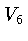
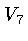
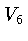
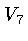

The Morgan-Scott Macro Panel lets you impose symmetric super smoothness conditions on the Morgan-Scott split and then check if a macro element can be built with those conditions.
To obtain the macro panel select the configuration "Morgan-Scott", and clock on the button "macro elements" in the control panel. The buttons on the macro panel have the following effects:
Super smoothness conditions can be imposed using the text fields in the second row of the macro panel, and the buttons to either side of those text fields. The text fields lists the additional degree of smoothness. So if all the text fields show zero then the spline is the ordinary space without super smoothness conditions at all.
The types of smoothness conditions that can be imposed are listed
below. To understand the labels on the macro panel recall the
labeling of the vertices:  ,
,  ,
,  , and
, and  are
the boundary vertices, and
are
the boundary vertices, and  ,
,  , , and  are
the interior vertices, with
, , and  are
the interior vertices, with  being opposite
being opposite
 ,
,  .
.
The following groups of super smoothness conditions are available:
The natural data are the same as for the Clough-Tocher split.